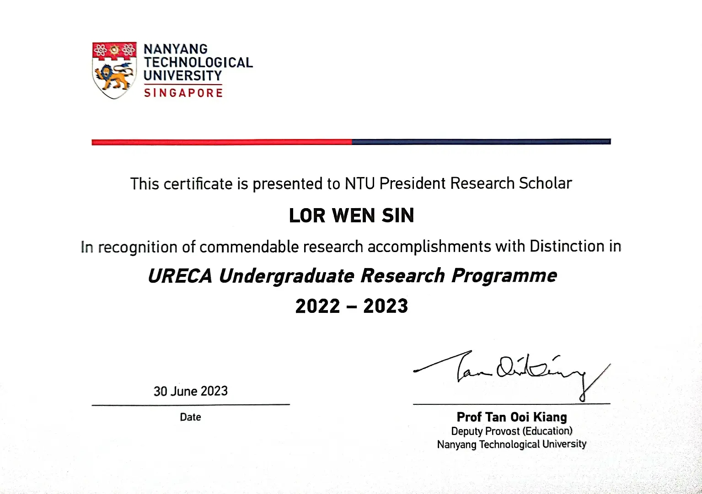

About Me
Lor Wen Sin (Albert)
Albert is currently a final-year undergraduate student majoring in Mechanical Engineering with a specialization in Robotics & Mechatronics at
Nanyang Technological University (NTU). Since his sophomore year, he has actively engaged in precision control, computer vision, and machine intelligence
research projects, including his current work on the Structural Optimization of Flexure-based Parallel Mechanism (nano-positioner) using Genetic Algorithm
in his Final-Year Project.
Albert's first research under Assistant Professor Kim Jinwoo resulted in a first-authored paper accepted at the 2023 IEEE International Conference on
Industrial Engineering and Engineering Management (IEEM). This success led to an invitation to join Professor Kim’s team as the sole undergraduate
researcher. Concurrently, Albert played a pivotal role in a high-profile project under Dr. Koji Tominaga at NTU's Air Traffic Management
Research Institute (ATMRI), funded by a seven-digit grant. His work captured the interest of the
European Organization for the Safety of Air Navigation (EUROCONTROL) and was highlighted during a joint board meeting with
ATMRI, leading additional funding due to its potential for operational implementation.
These accomplishments underscore Albert's extraordinary potential and deep commitment to scientific research,
especially notable while he is still an undergraduate. Throughout the academic and professional journey, he has been captivated by the evolving landscape of
Robotics, specifically both Robotics Design and Control.
He is seeking an opportunity to further his education for a PhD, aiming to leverage cutting-edge technologies and resources to fulfill his aspiration of
becoming a globally influential professor.
Research Experiences
Jul 2024 – Present
Final Year Project, Robotics Research Centre, NTU
Advised by Professor Lum Guo Zhan. Topic: Design and Optimization of 2R1T Nano-Positioning Stage
- To design and optimize a 2R1T parallel flexure-based mechanism using genetic algorithm
Jul 2024 – Present
Undergraduate Research Assistant, Centre for Advanced Robotics Technology Innovation, NTU
Advised by Professor Wang Danwei. Topic: Magnetic-Field Localization on a Time-Variant Magnetic Map
- To preprocess the raw magnetic data and to analyse the localization algorithm to ensure robustness
Aug 2023 – Jan 2024
Undergraduate Research Assistant, Human-Centered Construction and Infrastructure, NTU
Advised by Professor Kim Jinwoo. Topic: Occlusion-Specialized Synthetic Dataset for Computer Vision Applications
- Analysed the Moving Objects in Construction Sites (MOCS) benchmark dataset to study the rebars’ occlusion scenario
- Designed the algorithm for the placement of rebars in Blender
- Collaborated with an international research team from University of Toronto, Canada to generate the synthetic images
- Specially invited to join Prof. Kim’s research team due to outstanding performance in URECA
Dec 2022 – Aug 2023
Undergraduate Research Assistant, Air Traffic Management Research Institute, NTU
Advised by Professor Koji Tominaga. Topic: Decentralized Virtual Air Traffic Flow Management (ATFM) Infrastructure
- Developed the entire prototype of a decentralized virtual ATFM infrastructure independently
- Designed an algorithm that enables finer optimization to significantly reduce manual work in ATFM
- My prototype was presented in a Board Meeting between NTU ATMRI and EUROCONTROL
- Led to additional funding and potential commercialization due to my contribution to this 7-digit-funded research
Aug 2022 – Aug 2023
Undergraduate Research Programme (URECA) - NTU President Research Scholar
Advised by Professor Kim Jinwoo. Topic: Monocular Vision-Based Cumulative Damage and Risk Assessment
- Developed a mathematical model to integrate ergonomics risk percentage and the kinematics of human workers
- Developed an algorithm to implement my mathematical model with monocular vision-based techniques
- Presented my work at IEEE international conference on Industrial Engineering and Engineering Management (IEEM) and published the conference paper as the first author
- 
Industry Experiences
Jan 2024 – May 2024
Nanolithography Engineering Intern, Taiwan Semiconductor Manufacturing Company
Supervised by Mr. Ko Ping Hao, Deputy Manager of Nanolithography Department
- Completed the Overseas Professional Internship Program
- Collaborated with outstanding senior engineers in world-leading lithography equipment for chip manufacturing
- Collaborated with the development team at the headquarter as a main developer to a sustainable error-proof system
Education
Jan 2024 – Present
BEng, Mechanical Engineering (Robotics & Mechatronics stream), Nanyang Technological University, Singapore
Professional Presentations
Dec 2023
Monocular Vision-based 3D Human Pose Estimation and Cumulative Damage Assessment at Industrial Workplaces
- 2023 IEEE International Conference on Industrial Engineering and Engineering Management (Oral Presentation)
Teaching Experiences
Aug 2024 - Present
Control Theory Peer Tutor, School of Mechanical and Aerospace Engineering, NTU
Jan 2021 - Aug 2021
Private Tutor for High-School Physics